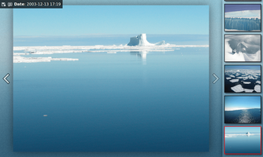

fgallery
Dieser Artikel wurde für die folgenden Ubuntu-Versionen getestet:
Ubuntu 16.04 Xenial Xerus
Zum Verständnis dieses Artikels sind folgende Seiten hilfreich:
 fgallery
fgallery  erstellt aus Bildern eine internetfähige statische HTML-Galerie. Allerdings muss diese nicht zwingend im Internet veröffentlicht werden, sondern kann beispielsweise auf CD/DVD gebrannt und weitergegeben werden. Zum Betrachten ist ein Webbrowser ausreichend, der aber JavaScript unterstützen muss. Darüber hinaus kann das Programm auch zur Archivierung eingesetzt werden.
erstellt aus Bildern eine internetfähige statische HTML-Galerie. Allerdings muss diese nicht zwingend im Internet veröffentlicht werden, sondern kann beispielsweise auf CD/DVD gebrannt und weitergegeben werden. Zum Betrachten ist ein Webbrowser ausreichend, der aber JavaScript unterstützen muss. Darüber hinaus kann das Programm auch zur Archivierung eingesetzt werden.
Zusätzlich angeboten wird die Anzeige einer Bildunterschrift (soweit vorhanden) und das Herunterladen der Originalbilder (als ZIP-Archiv). Da die Sortierung der Bilder chronologisch anhand der Exif-Daten erfolgt, ist das Erstellen einer Bildergalerie mit Bildern aus unterschiedlichen digitalen Kameras kein Problem.
Erstellt wurde fgallery mit Perl.
Installation¶

Das Programm ist ab Ubuntu 16.04 Bestandteil der offiziellen Paketquellen und kann über folgendes Paket installiert werden [1]:
fgallery (universe)
 mit apturl
mit apturl
Paketliste zum Kopieren:
sudo apt-get install fgallery
sudo aptitude install fgallery
Optional¶
Für optimale Ergebnisse wird die Installation folgender Zusatzpakete empfohlen:
jpegoptim (universe, JPG-Optimierung)
liblcms2-utils (Farbmanagement)
p7zip (universe, Archiv-Erstellung)
pngcrush (universe, PNG-Optimierung)
mit apturl
Paketliste zum Kopieren:
sudo apt-get install jpegoptim liblcms2-utils p7zip pngcrush
sudo aptitude install jpegoptim liblcms2-utils p7zip pngcrush
Verwendung¶
Die allgemeine Syntax des Kommandozeilenprogramms lautet [2]:
fgallery [OPTIONEN] /PFAD/ZUM/BILDERORDNER AUSGABEORDNER [NAME_DER_GALERIE]
|  |
| Beispielgalerie |
Zwingend erforderlich sind nur der Pfad zu den Originalbildern und ein Ausgabeordner (eine Ausgabe in den gleichen Ordner ist nicht möglich). Unterstützt werden die Bildformate JPEG, PNG und TIFF. Der Ordner mit den Originalen wird rekursiv ausgewertet, so dass auch Unterordner automatisch berücksichtigt werden. Bilder werden automatisch gedreht, wenn die Orientierung (Hoch-/Querformat) im Bild gespeichert ist.
Zum Betrachten des Ergebnisses anschließend die Datei index.html innerhalb des Ausgabeordners mit einem Browser öffnen.
Beispiel:
fgallery ~/Bilder/Geburtstagsfeier/ ~/Bilder/Geburtstagsfeier_HTML/
reading completed processing completed generating archive... completed
Optionen¶
Das Programm kennt die folgenden Optionen:
| Optionen von fgallery (Auswahl) | |
| Option | Beschreibung |
-h, --help | Hilfe |
-d | kein Bildarchiv zum Herunterladen erstellen |
-s | auf Größe optimierte Ausgabe (kein Bildarchiv, keine Originale bereitstellen) |
-r | umgekehrte chronologische Reihenfolge |
-c METHODE | siehe Bildunterschriften |
-f | siehe Gesichtserkennung |
Weitere Optionen sind der Manpage zu entnehmen.
Bildunterschriften¶
Über die Option -c METHODE lässt sich die Methode zur Auswahl einer Bildunterschrift (Titel) steuern. Zur Auswahl stehen:
| Methode | Beschreibung |
txt | Titel aus einer TXT-Datei (gleicher Dateiname wie Bild) |
xmp | Titel aus einer XMP-Sidecar-Datei (gleicher Dateiname wie Bild) |
exif | Titel aus den Exif-Metadaten (Kommentarfeld) |
cmt | Titel aus dem bei den Formaten JPEG oder PNG integrierten Kommentarfeld |
Standard ist die Reihenfolge txt,xmp,exif. Um Bildunterschriften dauerhaft im Bild zu speichern, kann ein spezieller Metadaten-Editor wie z.B. Photini verwendet werden. Auch viele Bildbetrachter beherrschen das Bearbeiten der Metadaten.
Problembehebung¶
JavaScript¶
Das Programm verwendet JavaScript zur Anzeige im Browser. JavaScript darf daher nicht deaktiviert sein bzw. muss zum Betrachten aktiviert werden. Auf Gecko aufbauende Browsern wie Firefox, Seamonkey, IceCat oder Pale Moon funktionieren problemlos. Dagegen haben auf WebKit basierende Browser (Chromium, Midori, Opera, QupZilla und Vivaldi) Probleme mit der lokalen Anzeige (AJAX same-origin Beschränkungen), die sich nur durch den Einsatz eines Webservers lösen lassen. Instant Webserver kommen ohne aufwendige Installation aus.
Bilder ergänzen¶
Um Bilder zu einer vorhandenen HTML-Galerie hinzuzufügen, kopiert man neue Bilder in den Quellordner der Galerie und wiederholt die Galerie-Erstellung, wobei als Ziel der vorhandene Ausgabeordner dient. Problematisch ist dagegen die Idee, einen anderen Quellordner in einen vorhandenen Ausgabeordner integrieren zu wollen: der bisherige Inhalt wird komplett überschrieben. Analog zu obigem Beispiel ist es daher nicht möglich, mit:
fgallery ~/Bilder/Weihnachten/ ~/Bilder/Geburtstagsfeier_HTML/
Bilder einer Weihnachtsfeier der vorhandenen Galerie zur Geburtstagsfeier hinzuzufügen. Man erhält lediglich eine Galerie mit Bildern der Weihnachtsfeier.
Audio-Unterstützung¶
Um die fertige Bildergalerie mit Hintergrundmusik auszustatten, bearbeitet [3] man die Datei index.html innerhalb des Ausgabeordners nach der Anleitung Eingebettete Audio-Ressourcen  :
:
1 2 3 4 5 6 | <body> <audio autoplay loop> <source src="titel.mp3"> </audio> ... </body> |
Links¶
Mit fgallery Web-Verzeichnisse mit Bildern verschönern
- Blogbeitrag, 07/2015Diashows erstellen - Alternativen zu fgallery
Bilder verwalten - webbasierte Bildverwaltungen
Webentwicklung
 Übersichtsartikel
Übersichtsartikel
- Erstellt mit Inyoka
-
 2004 – 2017 ubuntuusers.de • Einige Rechte vorbehalten
2004 – 2017 ubuntuusers.de • Einige Rechte vorbehalten
Lizenz • Kontakt • Datenschutz • Impressum • Serverstatus -
Serverhousing gespendet von